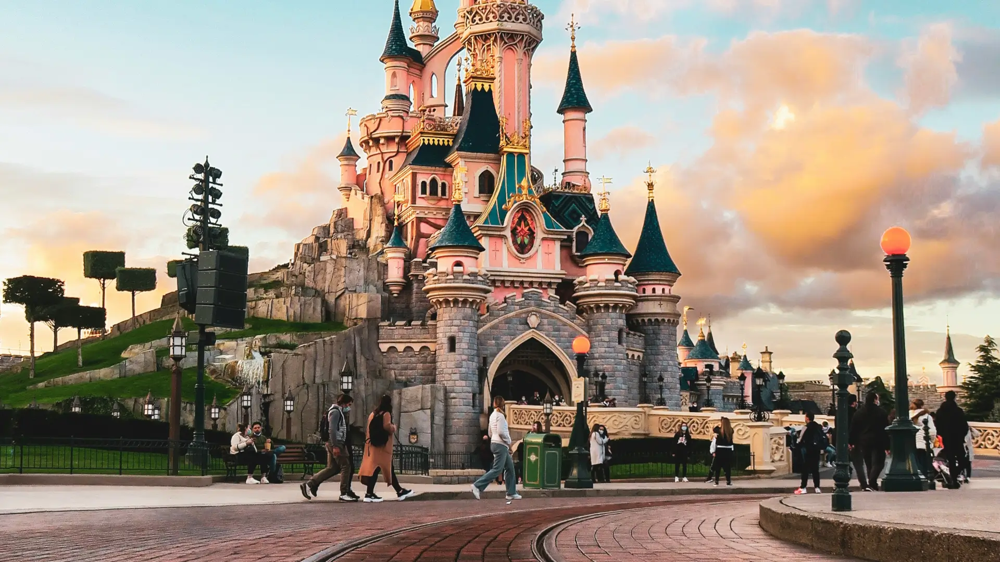

Disneyland and Disneyworld are some of the worlds most known parks, whether you're an adult or taking your kids on a family vacation, it is the experience of a lifetime and something that i feel everyone should experience at least once, it can be quite expensive mind you but we will talk about all that and more in our ultimate writeup for Disney's Parks.
Like we mentioned prior there are two different type of parks, one of them being Disneyland and the other DisneyWorld, now if you're not aware what the differences are between the two then let me tell you that the biggest difference is the sheer size of them, Disneyland covers around 500 acres of land as Disneyworld covers a whopping 27,000 acres.
That's not to say that the size is the only difference, there's different merchandise for example that you can only find across of the many locations in the world, and one that springs to mind is the Kingdom Hearts Pins that can be very hard to find depending on which location you visit, along with having different rides, hotels and such but we will get into that shortly.
When it comes to the pricing though this can vary depending on when you want to go, how many people will be attending the park, and of course adults along with child ticket prices can vary along with a variety of other factors, like if you are staying at one of the resorts, want to have food, while these are things you would normally factor into a holiday, the costs can quickly grow wildly so it is something that you should be aware of.
Another big difference the Disney parks share, and this may not come as surprise if your a hardcore Disney fan, is that the castles are actually different in all of the locations, they all have different variations to eachother, now that you know that we have a fun little tidibit of information that only some of you out there will know. The castle we all know and love is actually inspired by a real castle situated in Bavaria, Germany. It's based on a castle called Neuschwanstein Castle and if you've not seen it, i just wanted to tell you that it's truly a sight to behold, surrounded by the most incredible views and the castle itself is full of rich culture, a must visit even if you only to see where the inspiration for the magical castle came from.
Talking of locations, there are a total of 12 park locations ranging from the very first one that was built in Anaheim, Florida all the way to Tokyo, Japan. If you've been to one and loved it and can afford it then you should absolutely check out some of the other locations, there is always so much to see and do, one of my favourite things is watching the fireworks and parades, it's truly magical having Disney, Pixar and even Star Wars characters walking around the parks interacting with all the guests, getting your photos taken and just having the most magical time.
If you are a fan of theme park rides, you are absolutely not going to be dissapointed with the incredible rides on offer at any Disney's parks. For example there are four enormous theme parks, that all coalesce together, the best part is they are completely unique to eachother, having they're own unique asthetics, and designs.
Let's start of with EPCOT (Experimental Prototype Community of Tomorrow) this section of the park is inspired by the the city of the tomorrow, taking innovative ideas from all the new technologies that were emerging at the time, it houses a giant dome called space ship earth, a fantastical ride that takes you on a ride that spans all throughout humanity's history.

Magic Kingdom Park, is where Disney Castle is situated and where the fireworks show normally takes place and it's home to some of the most fun rides in all of Disney theme parks in my humble opinion of course, we have the likes of Space Mountain which is one of the best rides i've ever been on along with the Dwarves mine cart, oh and something that's great for the little ones is Dumbo's elephant ride, it's honestly some of most fun you can have at the park, but that's not all, keep reading for more.
Star Wars fans this is for you, if you've ever wanted to go to the Galaxy's Edge, well now you can! Check out Hollywood studios and everything they have to offer, venture forth to Savi's Workshop and create your very own lightsaber, if your really lucky you might even be able to get the very rare BLACK lightsaber! Now that's not all, don't worry because Hollywood Studios is also the home to Toy Story Land where you are able to interact with your favourite Andy's toys.
We've not even scratched the surface when it comes to Disney Parks rides, there is honestly so many across all the different locations, that you would many visits to experience them all, honestly we're not joking there are currently over 150 attractions for you to experience, spanning across so many of Disney's franchises there is no shortage of fun to be had.
If you are wanting to go for a weekend and want to spend a bit extra, then look no further one of the many Resorts you can stay in as most of these are themed around certain Disney franchises and themes, for example camping, sports, old hollywood, spooky and much more, but don't worry if you prefer a more 'standard' feel to your hotels, because those are also available. Of course these all differ depending on location, so it might be worth to check them out ahead of time.
On rare occasions they've also offered a limited time rooms. Just be aware that not only is the availability very limited but they can also be little expensive, example being that in Disneyworld Tokyo there was a suite where the whole room was decorated in Kingdom Hearts decor, to celebrate the series 20th anniversary at the time. But if your interested in something like this, you should book in advance or as soon as the reservations open up so you don't miss out.
Something to also be aware of is that the Resorts don't come with breakfast included, so you will have to pay extra for it or if you prefer you can go to the one of the many restaurants around the park, though the cheapest option would be to go offsite and go to a nearby cafe or another establishment, though if do decide to eat at the park, you get Disney themed food like Mickey pancakes or other similarly themed food, it's very delicious in my opinion, worth it for sure.
Though that's not all, and this is catered more to young kids mind you, but you can book to have a dining experience with some of your favourite princesses, and they're all usually available for breakfast, lunch or dinner. Though as you can probably imagine, this dosen't come cheap as your looking to pay upwards of 100$ and the price is the same even for children, so just keep that in mind, but i'd say it's worth it just so the little ones faces light up getting to spend some time with their favourite characters.